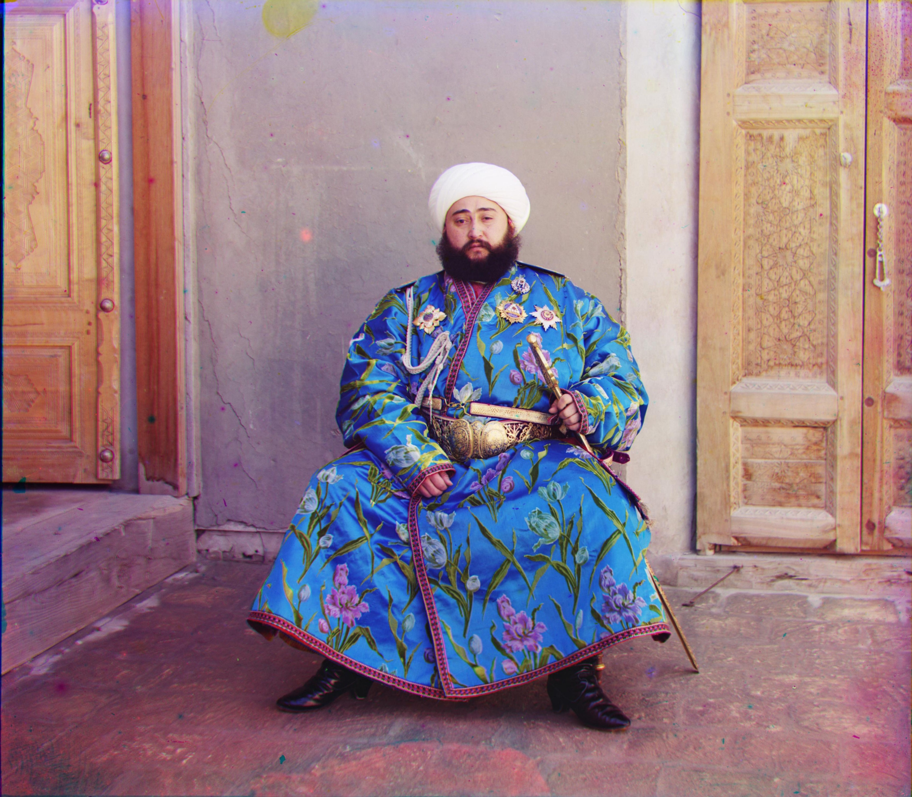

Project 1: Images of the Russian Empire: Colorizing the Prokudin-Gorskii photo collection
In this project, I recovered a collection of black-and-white photos, taken by Sergey Prokudin-Gorsky, into colored version. These photos are taken by putting a red, green and blue filter in the camera such that each photo corresponding to that filter only records the intensity of that color. Ideally, by stacking photos from red, green and blue channel, we would be able to recover the colored version of these photos, and this is exactly what this project does.
To create the most accurate result, we first need to properly align the red, green and blue channels. This is the core of the project. My approach is using the simple Sum of Squared Differences (SSD) metric to measure the difference between two channels in order to find the best alignment. Since the many of the images are very large, I also added a image pyramid to speed up the alignment process. Basically, I created copies of the original image to be aligned and scale them by factor of powers of 2, then start from the coarest scale to get a rough estimate, then as it goes down the image pyramid, it updates the alignment offset for the larger image, eventually arrives at the original image.
During the alignment process, one problem I encountered was that the result wasn't ideal if I crop the photos before rolling them, after fixing that the results are a bit better.
We could see that the photo "harvesters" doesn't have the best result, since two people in the background are blurred, but that's an unavoidable result since these two people are out of place in the orginal channels compare to everything else, so in order to correctly align everthing, we have to sacrifice the clarity of these two people.
The following are some of the recovered photos:
"Lady". red-green offset: -8 -58
blue-green offset: 3 63

"emir". red-green offset: -24 -49
blue-green offset: 16 57"church". red-green:0 -25
blue-green:-7 33"harvesters". red-green offset: -16 -60
blue-green offset: -3 65"icon". red-green offset: -17 -40
blue-green offset: 5 48"onion_church". red-green offset: -26 -52
blue-green offset: 10 57 "melons". red-green offset: -8 -82
blue-green offset: 4 96"monastery". red-green offset: -2 3
blue-green offset: 1 6"sculpture". red-green offset: 11 -33
blue-green offset: -16 -3150"self_portrait". red-green offset: -3838 -79
blue-green offset: 8 98"three_generations". red-green offset: -12 -54
blue-green offset: -2 58 "tobolsk". red-green offset: -3 -3
blue-green offset: 1 4 "train". red-green offset: -6 -43
blue-green offset: 27 43 Site of the imprisonment of the Vorotynskii princes. red-green offset: -31 -3214
blue-green offset: 7 22 Old Gospel. Manuscript. red-green offset: -3826 -52
blue-green offset: 10 62 Old lantern. In the Church of the Nativity of Christ. red-green offset: -13 -5
blue-green offset: 13 -3164